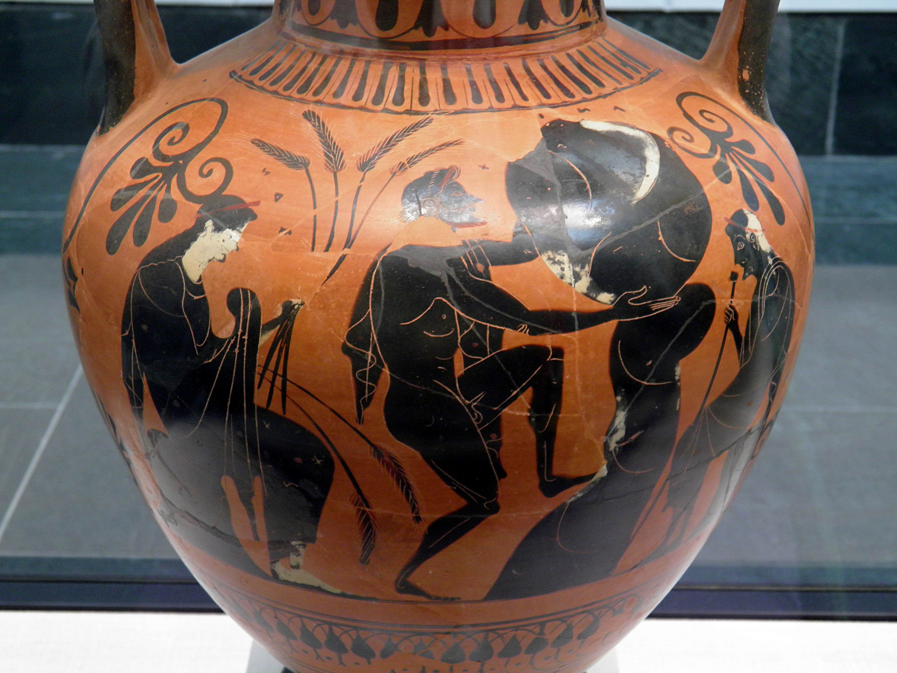
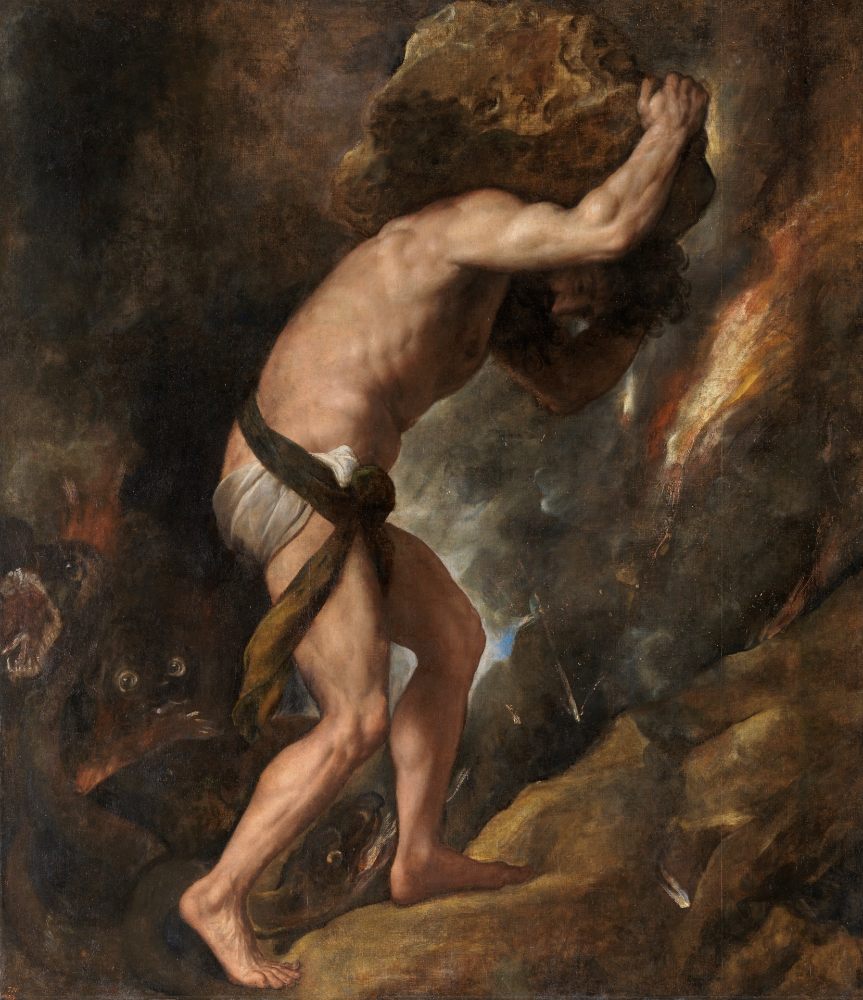
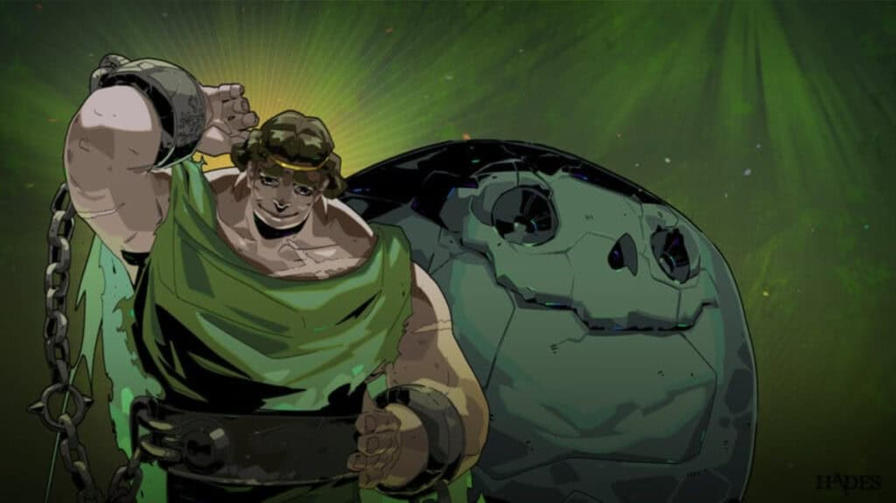
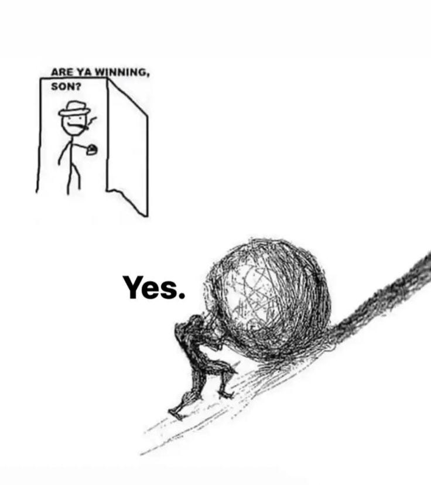
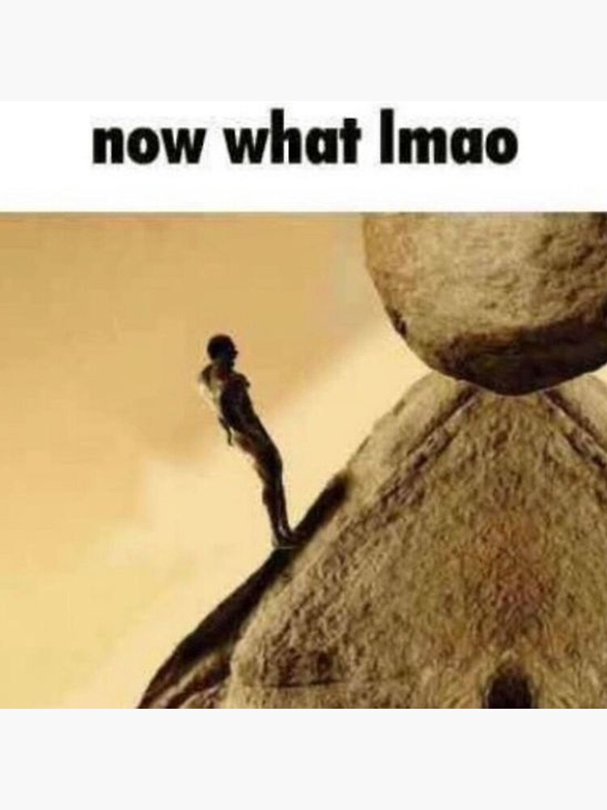
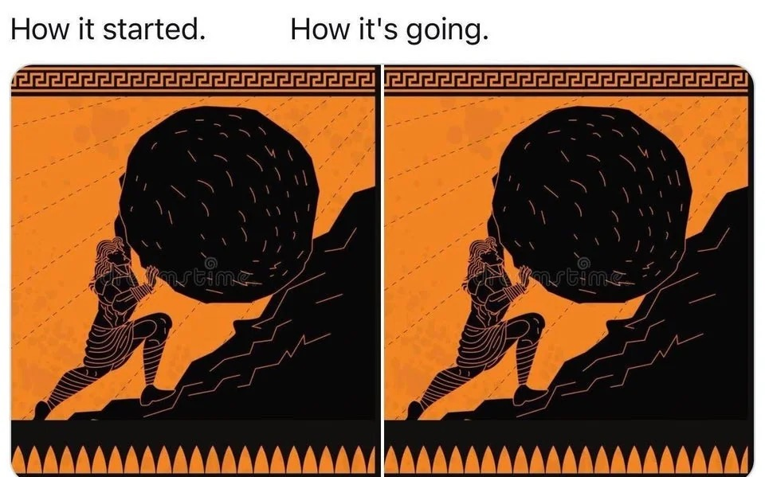
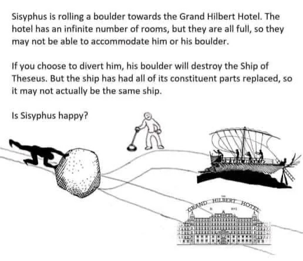
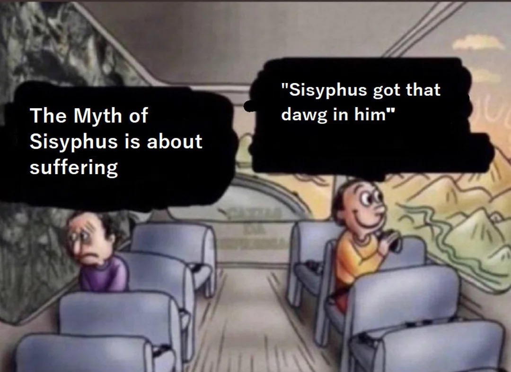

The argument
Sisyphus is a prime example of how myth changes meaning over time.
The myth of Sisyphus is easy to recognize: a man, a hill, a stone, and a never-ending task. However, the meaning of that image has changed since its ancient interpretation. In ancient sources, Sisyphus is mainly a warning against being deceitful and betraying or tricking the gods. In the twentieth century, Albert Camus turns him into a figure for living honestly in an absurd world, making him the face of absurdism. Today, he becomes shorthand for any exhausting loop: schoolwork, jobs, games, chores, and starting again.
That transformation matters because the meaning of Sisyphus and his boulder is whatever a culture interprets their story to be.
Ancient Greece
First, Sisyphus is a clever king.
Before the stone becomes the center of the story, Sisyphus is remembered as a ruler and a trickster. In the Iliad, Homer identifies him as the son of Aiolos, the father of Glaukos, and the king of Ephyra, the older name for Corinth. Homer also calls him the "craftiest of men" (Iliad 6.152-155). That phrase is important because it shows what kind of figure Sisyphus was before later authors explained his punishment. He is not weak or passive. He is cunning and very intelligent.
In Greek myth, intelligence can be heroic, but it can also be threatening. Odysseus survives because he is clever. Prometheus suffers because he is clever against Zeus. Sisyphus belongs near that second pattern. His mind is powerful, but it pushes against the authority of the gods, the inevitability of death, and the separation between the living and the dead, a pattern emphasized in modern summaries of the myth by Timothy Gantz and Robin Hard.
The underworld
Then he becomes the man with the stone.
The most famous ancient description comes in the Odyssey 11.593-600. When Odysseus visits the underworld, he sees Sisyphus straining to push a monstrous stone upward. Just when the stone is about to cross the ridge, a force throws it back down, and Sisyphus must descend and begin again. Homer gives the image in only a few lines, but those lines are enough to make the punishment unforgettable.
The scene is terrifying because it removes the normal shape of work. Most work has a goal: plant and harvest, build and finish, travel and arrive. Sisyphus must exert effort without completion. He is punished with work that produces no progress.
"I saw Sisyphus in violent torment, seeking to raise a monstrous stone with both his hands." Homer, Odyssey 11.593-600

Why the punishment?
The ancient crime is crossing limits.
Homer gives the punishment, but not the full backstory. Later sources fill in the reason. In Apollodorus, Sisyphus reveals that Zeus has abducted Aigina, the daughter of the river god Asopos. He does not reveal the secret for justice alone: he trades information for a spring of water at Corinth (Library 1.9.3). This version makes him clever and useful to his city, but also dangerous because he exposes Zeus.
Hyginus gives an even more extreme version in Fabulae 50 and 60. Sisyphus chains Death, which means no one can die until Ares frees Death again. Then Sisyphus tricks the underworld by arranging for his body to go unburied. Because proper burial mattered deeply in Greek culture, this detail is not random. Scholars such as Robert Garland, Christiane Sourvinou-Inwood, and Sarah Iles Johnston all emphasize how seriously the Greeks treated funeral rites and the boundary between the living and the dead. Sisyphus manipulates that boundary as if it were another puzzle to solve.
This is why his punishment fits the crime. He tried to interrupt the normal order of gods, death, burial, and return. In response, he is placed in a loop that his cleverness cannot break. Pausanias also connects Sisyphus to Corinth's mythic landscape in Description of Greece 2.5.1.

What changed?
The image stayed. The moral changed.
The same myth can support two very different lessons. In ancient myth, Sisyphus is punished because he acts as if cleverness can defeat divine order. In Camus, Sisyphus matters because he faces a meaningless task without surrendering his awareness. The story moves from crime and punishment to consciousness and endurance.
That shift is where Sisyphus's interpretation becomes modern. Most people today are not worried about being punished by Zeus for revealing a divine secret. However, they do understand the absurd punishment: work that repeats with no end in sight, days that feel more and more the same, and progress that disappears. Camus makes the old myth speak to that feeling.
1942 · Albert Camus
Camus turns punishment into consciousness.
Albert Camus does not invent a new Sisyphus in The Myth of Sisyphus. He keeps the stone, the hill, the descent, and the endless repetition. What he changes is the interpretation. Ancient versions focus on what Sisyphus did wrong and how the gods punish him. Camus focuses on what Sisyphus knows.
In The Myth of Sisyphus, Camus uses the story to think about the absurd: the clash between the human desire for meaning and a universe that does not clearly answer. If Sisyphus understands that his labor has no final victory, then his punishment becomes a test of awareness. He cannot escape the stone, but he can see the truth of his condition without lying to himself.
Camus is especially interested in the walk back down the hill. That pause matters because Sisyphus is not pushing at that moment. He is thinking. He knows the stone is waiting. He knows the work will restart. For Camus, this consciousness creates a victory: the gods control the punishment, but they do not fully control what Sisyphus makes of it. David Carroll reads this as part of Camus's larger rethinking of the absurd.
"The struggle itself toward the heights is enough to fill a man's heart. One must imagine Sisyphus happy." Albert Camus, The Myth of Sisyphus
That last sentence is the major reversal in the reception of the myth. Ancient Sisyphus is miserable because endless work is punishment. Camus's Sisyphus may be happy because he refuses false hope and still continues.
Modern language
"Sisyphean" becomes a word for pointless effort.
Modern English turns Sisyphus into an adjective. Merriam-Webster defines "Sisyphean" as something "requiring continual and often ineffective effort." The Oxford English Dictionary records the same modern adjectival use. These definitions keep the loop and punishment but leave out most of the myth. They remember the labor, not the betrayal of Zeus, the chaining of Death, or the burial trick.
This is one way reception works. A complicated story gets compressed into a single useful image. When someone calls a task Sisyphean, they usually mean that it is exhausting, repetitive, and probably impossible to finish. The myth becomes a tool for describing modern life.
Games and repetition
In Hades, the punishment becomes strangely gentle.
Supergiant Games' Hades is a useful modern interpretation because the whole game is built around repetition. Hades is a roguelike, a game where you make progress, die, and start over again. Zagreus, the main character, tries to escape the underworld, dies, returns home, and tries again. In that setting, Sisyphus fits the structure of the game.
The game also changes his emotional meaning. Sisyphus is still in Tartarus with his boulder, but he seems happier and is not presented as suffering. He is calm, kind, and funny. He calls the boulder "Bouldy," treats it like a companion, and helps Zagreus. Sisyphus's punishment is still the same, but the tone and his emotions are softer. The myth becomes about routine, friendship, and making a life inside repetition.
This version is close to Camus in spirit, even though it appears in a video game. Sisyphus is shown with a positive attitude, showing how he can change his mentality toward his punishment.

Memes
Finally, Sisyphus becomes "literally me".
The recent "one must imagine Sisyphus happy" meme trend takes Camus's final sentence from The Myth of Sisyphus and pushes the transformation even further. Know Your Meme traces the popularity of the phrase on TikTok in 2023, where users placed Sisyphus over clips from games, shows, and frustrating situations.
Homework becomes the stone. Debugging code becomes the stone. Laundry becomes the stone. Group projects become the stone. The meme works because of its relatability while exaggerating generally mundane tasks. The meme is still accurate to how Camus interprets and applies the myth of Sisyphus to everyday human life, since our version of pushing the boulder is often these everyday, mundane tasks.
By this point, Sisyphus is no longer only a mythological criminal or a philosophical hero. He has become a shared image for day-to-day repetition.





Sisyphus survives and changes throughout history.
Across time, the myth keeps the same basic picture but its meaning changes. Homer gives the groundwork for interpreting the punishment as eternal work with no progress. Apollodorus and Hyginus explain more about Sisyphus and why he deserved or earned it. Greek mythology gives the story its original meaning: do not trick the gods, do not cheat death, and do not underestimate the brutality of the underworld. Camus changes the interpretation from an unusual punishment to a story about finding happiness through pain. Modern internet and meme culture turn the story into a relatable way to describe the repetitive nature of life.
Sisyphus is just one example of how myth changes meaning over time. Much of Greek mythology has ancient interpretations, but it has also been adapted and changed over time to take on different meanings.